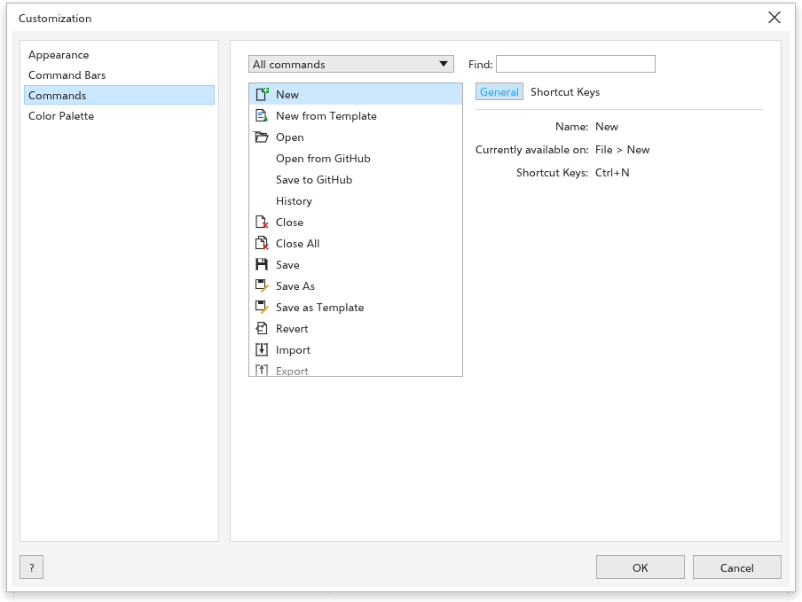
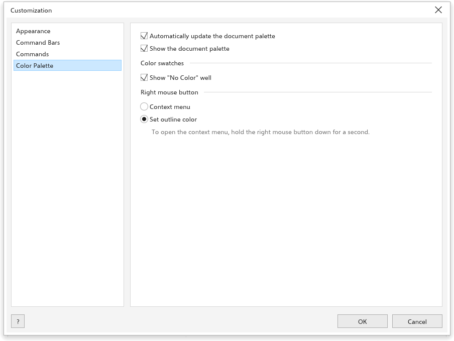

Aanpassingsopties
Extra > Opties > Aanpassing stelt het uiterlijk van de interface in, uw eigen sneltoetsen, welke balken zichtbaar zijn en hoe het kleurenpalet zich gedraagt.
Weergave

- Dialoogvensters centreren: dialoogvensters openen in het midden van het venster; uitgeschakeld openen ze waar u ze hebt achtergelaten.
- Shadows under menus and dialogs (minder schaduwen helpen bij tragere grafische kaarten).
- Coloured tool icons: elke groep gereedschappen krijgt een eigen kleur.
- Grootte: hoe groot menu's, balken, pictogrammen en panelen zijn, ten opzichte van de schaal die uw systeem aan de monitor geeft (in het begin 100%). Standaard herstellen gaat terug naar 100%. De grootte van de interface verandert nooit de grootte van uw tekening. Grow with the desktop text size (now {n} %) laat haar meegroeien met de tekstgrootte van het bureaublad.
- Kleur: het Thema (Licht, Middellicht, Middeldonker, Donker of Hoog contrast), Use high contrast while the desktop has a high contrast theme on, en de Kleur bureaublad rond de pagina. De knop helemaal rechts in de statusbalk schakelt tussen licht en donker.
Opdrachten

De pagina toont elke opdracht van de menu's met de sneltoets ervan, en de gereedschapstoetsen. Typ in Zoeken om de lijst te filteren.
Zo geeft u een opdracht uw eigen sneltoets:
- Klik op de sneltoetsknop van de opdracht.
- Druk op de toetsen, zoals Ctrl+Alt+K. Esc stopt het wachten.
Uw sneltoetsen gaan voor de ingebouwde: als u een toets neemt die een andere opdracht gebruikt, meldt de pagina welke opdracht hem kwijtraakt. De menu's tonen uw sneltoets. De x naast een sneltoets verwijdert hem, en herstellen naar de standaardwaarden verwijdert ze allemaal. Gereedschapstoetsen zijn een letter of Shift en een letter. Zie Sneltoetsen.
Een opdracht kan meerdere sneltoetsen hebben: een nieuwe toets komt bij de toetsen die er al zijn (een ingebouwde toets blijft ernaast werken), en elke toets heeft een eigen verwijderknop. Knoppen van de balken die een menuopdracht uitvoeren (Nieuw, Openen, Opslaan, Ongedaan maken, Inzoomen en andere) krijgen ook sneltoetsen, dezelfde als hun menuopdracht, net als regels die de menu's alleen soms tonen. Een lijst Werkbalkknoppen bevat alle knoppen van de werkbalken Standaard en Zoom: sleep van daaruit een verwijderde knop terug naar de balk.
Opdrachtbalken

Deze balken weergeven Menubalk, Standaard, Eigenschappenbalk, Gereedschapskist, Statusbalk, Kleurenpalet, en de werkbalken Tekst, Zoomen en Transformeren. Opnieuw instellen zet de balken terug. Onder Overige: Werkbalken vergrendelen en Het uitklapmenu Omtrek in de gereedschapskist weergeven.
While these pages are open (or with Alt held), drag a button of the Standard or Zoom toolbar to move it, or off the bar to remove it. Drag a command from the Commands page onto one of these bars to add it. Reset on the Command Bars page brings the first buttons back.
Kleurenpalet

- Het documentpalet automatisch bijwerken en Het documentpalet weergeven (beide aan).
- Kleurstalen: Vakje "Geen kleur" weergeven (aan), en wat de Rechtermuisknop doet: Omtrekkleur instellen (in het begin) of het Contextmenu openen.
Zie Kleurenpaletten.